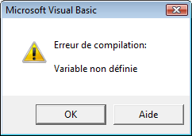

Chapitre 4 - Stocker de l'information : les variables et les constantes
La déclaration des variables
Une variable permet de stocker une valeur pouvant être modifiée au cours de l’exécution d’un programme.
Le mot clé Dim permet de déclarer explicitement une variable :
Dim NomVariable
où NomVariable est une suite de caractères formée avec des lettres, des chiffres ou le caractère souligné _ (ou tiret-du-huit pour les non initiés).
Le premier caractère est obligatoirement une lettre. Les minuscules sont distinguées des majuscules.
En VBA la déclaration des variables n’est pas obligatoire. Néanmoins, il est préférable de forcer la déclaration explicite des variables notamment pour faciliter le contrôle du comportement du programme et traquer les erreurs de frappe très fréquentes en programmation.
Sub MacroTestVariable()
valeur = Range("A1").Value
Range("B1").Value = valleur
End Sub
Dans cet exemple, quelle que soit la valeur de la cellule A1, cette macro n’écrira rien dans la cellule B1. Pourtant VBA ne détecte aucune erreur dans le code. Il considère qu’il y a deux variables distinctes valeur et valleur.
Il est donc préférable de forcer la déclaration explicite des variables en VBA. Pour ce faire, il suffit de placer l’instruction Option Explicit en première ligne des modules de code avant toutes procédures et toutes fonctions.
Si maintenant on reprend l’exemple précédent en forçant la déclaration des variables :
Option Explicit
Sub MacroTestVariable()
valeur = Range("A1").Value
Range("B1").Value = valleur
End Sub
VBA détecte une erreur de compilation car la variable valleur n’est pas définie.

Pour ajouter automatiquement l’instruction Option Explicit à tous les nouveaux modules de code créés, il faut cliquer sur l'onglet OUTILS - OPTIONS et cocher la case DECLARATION DES VARIABLES OBLIGATOIRE.
Le type des variables
La plupart des langages de programmation imposent de déterminer le type de données qui peut être stockée dans une variable lors de sa déclaration. En VBA, ce n’est pas obligatoire. Par défaut, une variable non typée est du type Variant, qui permet de stocker n’importe quel type de données.
Dans un souci d’efficacité du code, il est préférable de typer ses variables. Une variable de type Variant prend plus de mémoire que n’importe quel autre type et utilise plus de ressource système pour son traitement (identification du type effectif de la variable et éventuellement conversion).
La déclaration du type d’une variable se fait comme suit :
Dim NomVariable As Type
Les différents types de données disponibles en VBA sont les suivants :
Byte, Integer et Long pour les entiers, initialisées à 0 ;
Single, Double et Currency pour les réels, initialisées à 0 ;
Boolean pour les booléens (True ou False), initialisées à False ;
String pour les chaînes de caractères, initialisées à "" (une chaîne vide) ;
Date pour les dates, initialisées à 00:00:00 ;
Object pour faire référence à un objet (une plage de cellule, une feuille de calcul, etc...) ;
Variant pour n’importe quel type, initialisées à "" (une chaîne vide).
Les variables déclarées implicitement, donc de type Variant, sont initialisées à "" (une chaîne vide).
Exemple :
Dim Nom As String
Nom = "Jean " & "Dupond"
Dim Age As Byte
Age = 23
Dim MaPlage As Object
Set MaPlage = Range("A1:B5")
La portée des variables
La portée d’une variable définit quelles procédures ou fonctions peuvent utiliser cette variable. Les variables déclarées à l’intérieur d’une procédure ou d’une fonction ne sont accessibles qu’à l’intérieur de cette procédure ou de cette fonction.
Exemple :
Sub InitialiseAge()
Dim Age As Integer
Age = 25
End Sub
La variable Age n’est accessible que dans la procédure InitialiseAge.
Pour qu’une variable soit accessible à l’ensemble des procédures et des fonctions d’un module, elle doit être déclarée au début du module à l’extérieur de toute procédure et de toute fonction (et ne pas être re-déclarée dans celles-ci !) avec le mot clé Public.
Exemple :
Public Age As Integer
Sub ModifieAge()
Age = 27
End Sub
Utiliser une procédure dans une autre
Pour utiliser une procédure dans une autre, il faut utiliser le mot clé Call suivi du nom de la procédure que l’on souhaite utiliser. Par exemple, ci-dessous, la procédure PrintValue est utilisée dans la procédure TestPrintValue.
Sub PrintValue(Value As Double)
Range("B1").Value = Value
End Sub
Sub TestPrintValue()
Call PrintValue(1.22)
End Sub
Seules les procédures sans arguments sont exécutables directement par les menus ou icônes. Toute procédure ayant des arguments devra donc être appelée dans une autre procédure pour pouvoir être exécutée. Dans l’exemple précédent et en l’absence d’autres procédures, la procédure PrintValue ne pourra être exécutée que par l’intermédiaire de la procédure TestPrintValue.
La déclaration des constantes
Une constante permet d’attribuer un nom à une valeur fixe. La déclaration d’une constante se fait à l’aide du mot clé Const comme suit :
Const NomConstante [As Type] = valeur
Les crochets indiquent que la déclaration du type n'est pas obligatoire. Vous devez les enlever si vous déclarez le type de votre variable.
Exemple :
Public Const Pi As Single = 3.14159265358979